Intro¶
Introduction¶
The Intro section is the first view which is visible when a customer visits the website.
It provides a brief introduction to the idea behind the website in the form of an image or video.
This section shows the:
- Company Logo
- Menu option
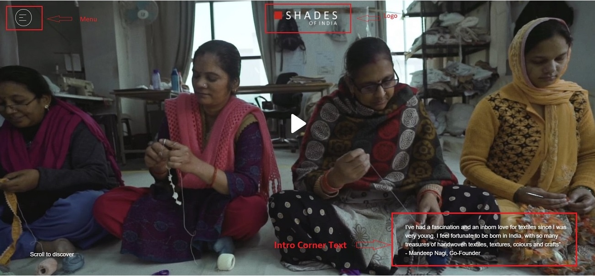
Create Intro¶
Below, we will see steps to add/edit/update the Intro section of the website:
- Go to ShadesofIndia
- Login with the credentials
-
Click on Website Customization on the left side panel.
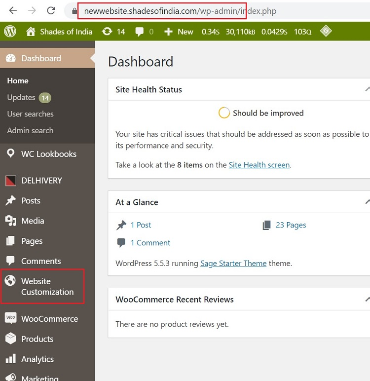
-
Select -> Intro -> This will take you to the customization page.
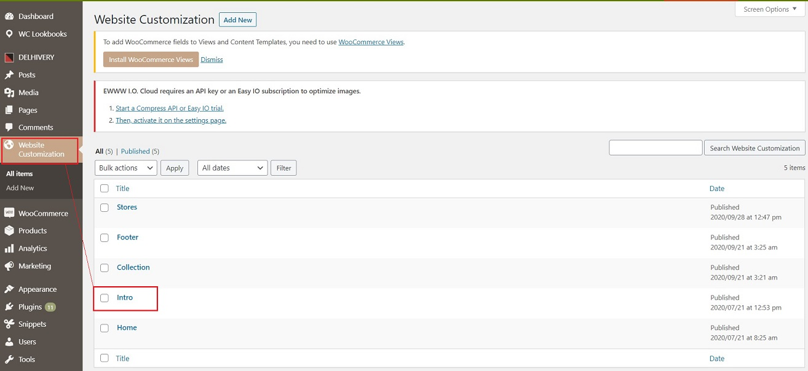
-
Select -> Add New -> if new entry is required.
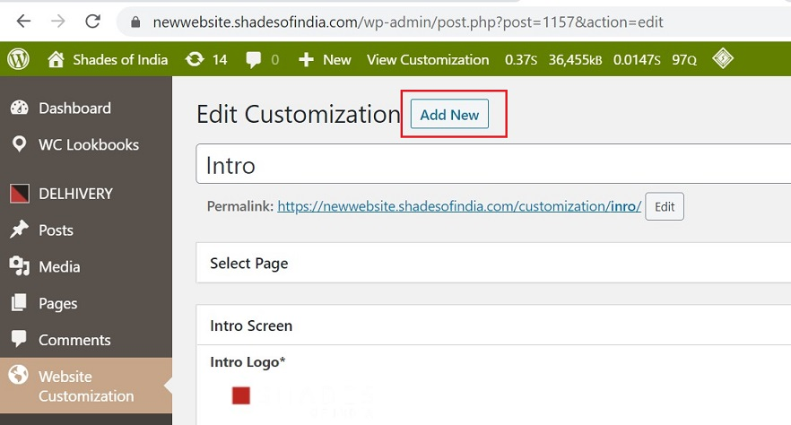
-
Go to -> Select Page -> to edit existing entries.
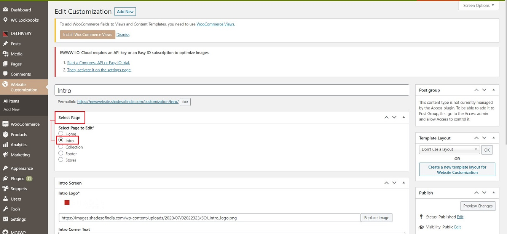
Intro Settings¶
Intro Screen¶
Under the Intro section, the following details can be edited:
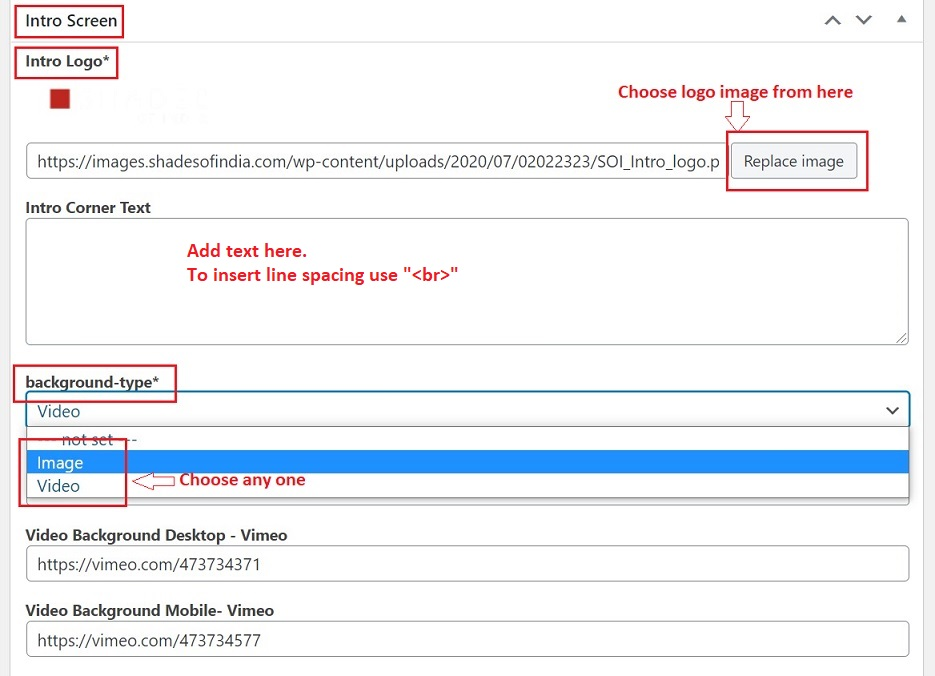
Intro Logo¶
- It is the logo that shows on the top of the page.
Intro Corner Text¶
- This is the text which appears on the bottom right corner. To insert a line spacing here -> add "br in <>" where space needs to be inserted.
Background Type¶
The background type can be of 2 types:
-
Video : A video can be used as a background.
-
Background Video Source : A video to be used can have 2 sources:
-
Vimeo : A video link from Vimeo can be inserted in the Desktop and Mobile fields.
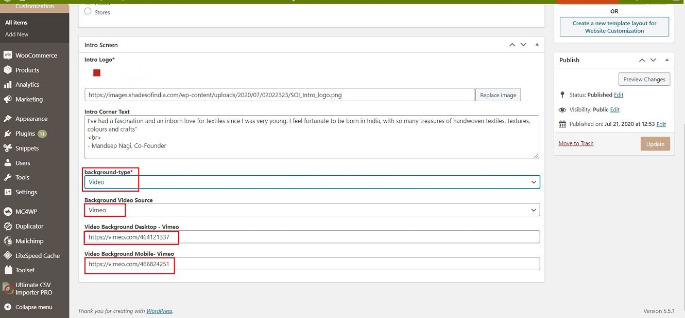
-
Upload : You can upload a video from the available list.
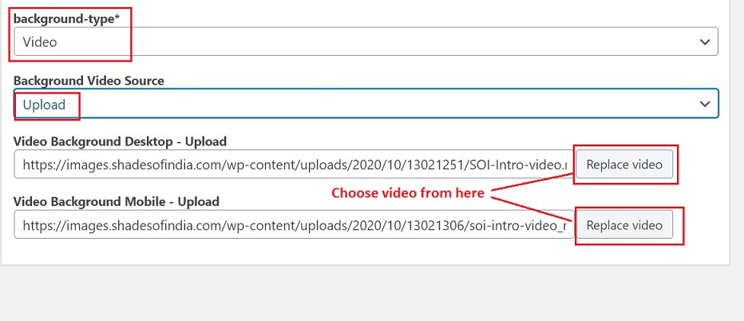
-
-
-
Image : Choose the image option to insert an image as background. You can select the image from the list in the Desktop and Mobile fields.
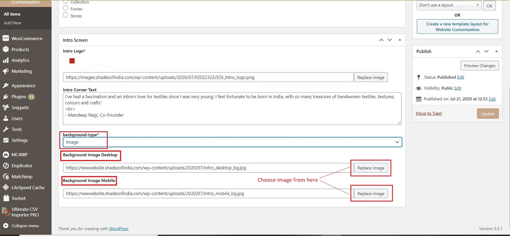
Publish/Update¶
-
Click on Publish button on the right side panel to save a new entry.
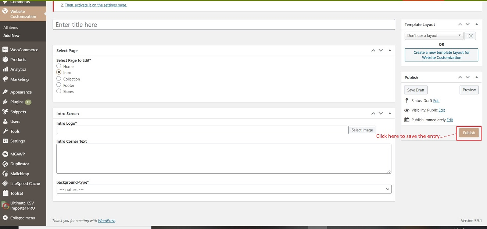
-
Click on Update button on the right side panel to save any edit done on existing entries.
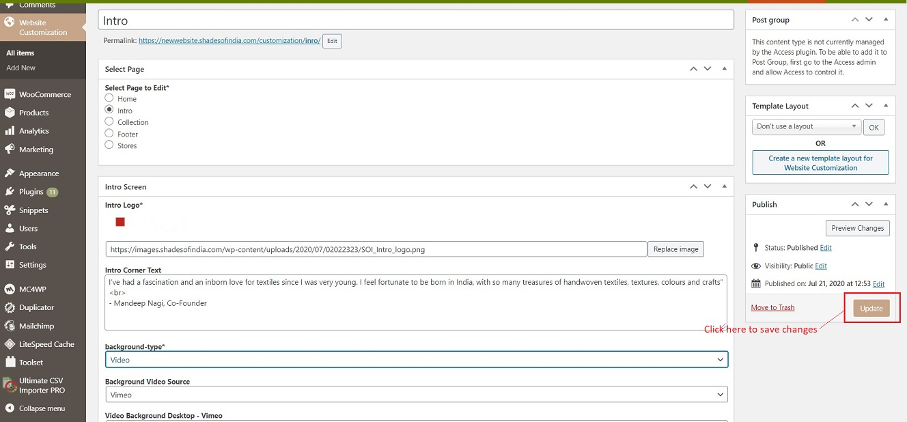